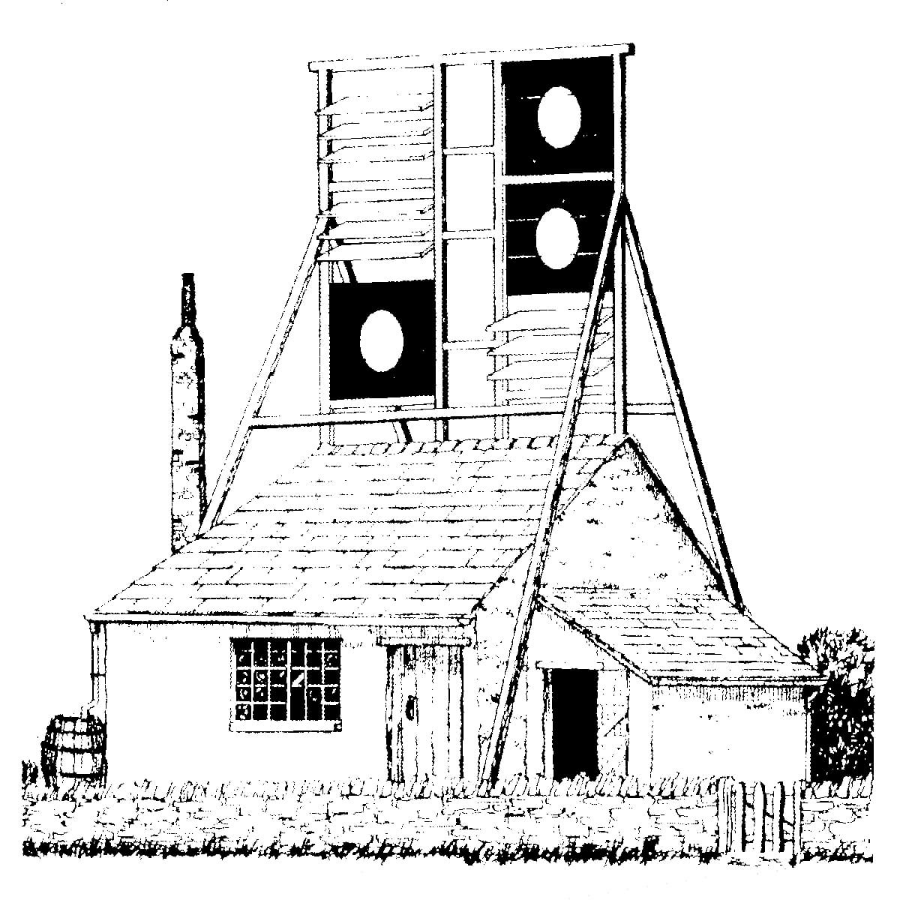
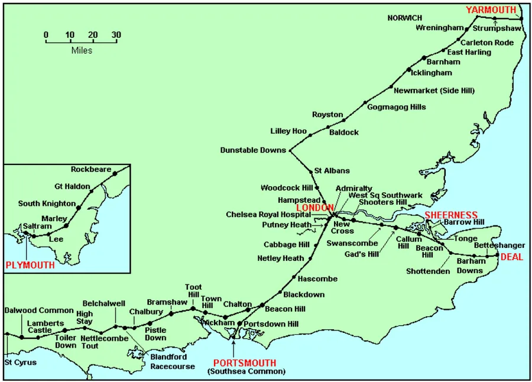
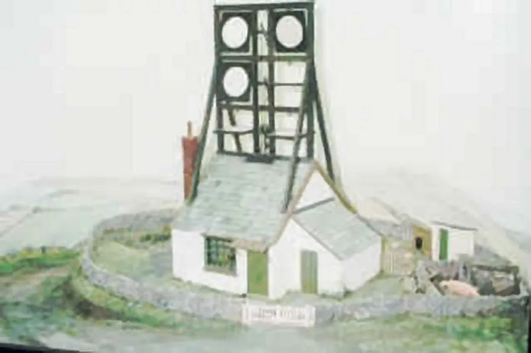
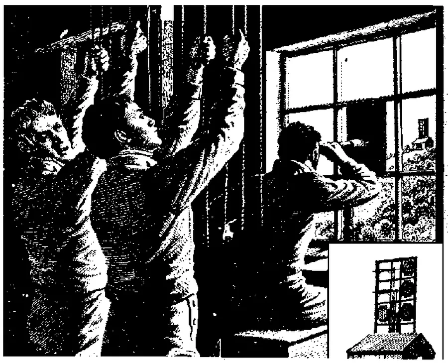
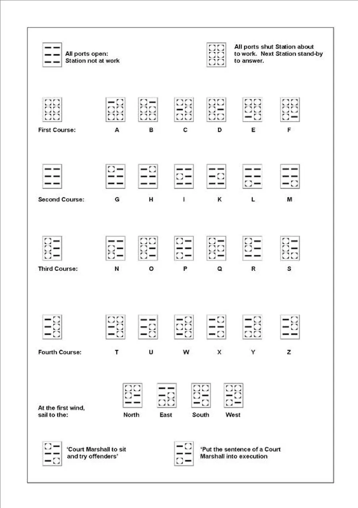

Telegraph (Pistle) Hill
by Adrian King

Telegraph Hill is situated on the parish boundary towards Verwood and it can be reached from Blackwater Grove. It is also called Pistle Down and was a landmark in Napoleonic times. On a clear day it is said that the spire of Salisbury Cathedral is visible. Once an open site but the trees have now grown high.
There is an earthwork just above the 300ft contour consisting of an enclosure and platform. This is the remains of a station in the early 19th century semaphore telegraph between London, Portsmouth and Plymouth. It was on the Plymouth Extension. The Admiralty Shutter Telegraph System was in operation for about twenty years.
At the beginning of the Continental War an optical telegraph developed by Chappe was already in use by the French. The admiralty worried by the military implications of this quickly sought a system of their own.

They purchased a system known as the Murray Letter Telegraph in 1796 for £2,000. It was developed by Sir / Lord George Murray (1761 – 1803) and consisted of a stout vertical frame thirty-foot-high by twenty-foot-wide which held six shuttered discs. By means of control ropes these shuttered discs could be moved into a invisible horizontal and a visible vertical visible position. The two positions represented the value of a binary sign. Hence with six shutters one could transfer a six-digit binary data word.
There was a total of sixty-four different possibilities so that apart from the letters of the alphabet and the ten numeral digits there was space for various special signs which had been agreed upon. These were either protocol signals for example Ready to receive and short signs alarm or similar. The codes were readily available and most people knew what was being sent.

On 12th July 1806 the Naval Chronicle reported
“The new telegraphs are nearly complete and the lodges for those men who work them are almost finished. A short message has been conveyed and an answer returned from London in a space of time from 10 to 12 minutes (a speed) of conveying intelligence hitherto unknown in this part of the country and will be a great saving.”
There was about five to ten miles between each station. The adjacent stations to Pistle Down being Bramshaw Telegraph to the east and Chalbury to the west. There were twenty-one stations between Plymouth and the junction at Beacon Hill on the Portsmouth line. It is known that a short message could be transmitted over 72 miles between London and Portsmouth and an answer received within 15 minutes.
In 1815, it took two days to get post from London to Plymouth but during the years of the telegraph as we see this was greatly reduced. When Captain Lord Cochrane made landfall at Plymouth on 19th March 1809 in HMS Imperieuse the fact of his arrival was telegraphed to London. Within one hour of anchoring he received a telegraph to report to the Admiralty at London.
It was this semaphore system which helped carry the news of Nelson’s Trafalgar and Wellington’s Waterloo.
Following the signing of the Second Peace Treaty of Paris on 30th May 1814 all four lines were closed. They would have served a useful purpose during the hundred days which followed Napoleon’s escape from Elbe but there was insufficient time to get them working again. Yet there is evidence that the Portsmouth and Plymouth branch were reopened in 1815 as it was back in use by July and August of that year and closed a year later.

The Telegraph Cottage was still occupied in the early part of the twentieth century and my mother Mavis King remembers her father — Arthur Bailey — telling her that the families worshipped at the Ebenezer Chapel at Cripplestyle and arrived at the chapel in the winter carrying lanterns after a hard journey across the common.

A bank much damaged by trees encloses an area 40 yards by 50 yards representing the station today. A platform 30ft square is situated in the centre of the area. All that remains of the Telegraph Cottage are the wild apple and cherry trees that were once in the garden.

Telegraph Stations on the Plymouth Branch
| Station | Miles | km |
|---|---|---|
| Charlton Down | 5.8 | 9.3 |
| Wickham | 7.7 | 12.4 |
| Town Hill | 9 | 14.5 |
| Toot Hill | 5.7 | 9.2 |
| Bramshaw | 9.5 | 15.3 |
| Pistle Hill | 9.2 | 14.8 |
| Chalbury | 4.8 | 7.7 |
| Blandford Racecourse | 8.6 | 13.8 |
| Belchalwell | 5.2 | 8.4 |
| Nettlecombe Tout | 5.2 | 8.4 |
| High Stoy | 5.2 | 9.3 |
| Toller Down | 7.8 | 12.6 |
| Lambert’s Castle | 9.7 | 15.6 |
| St. Cyrus | 4.7 | 7.6 |
| Rockbeare | 7 | 11.3 |
| Haldon Hill | 10 | 16 |
| Knighton | 9.2 | 15 |
| Marley | 9 | 14.5 |
| Ivybridge | 8 | 13 |
| Saltram | 5.4 | 8.7 |
| Mount Wise Plymouth | 4.8 | 7.7 |